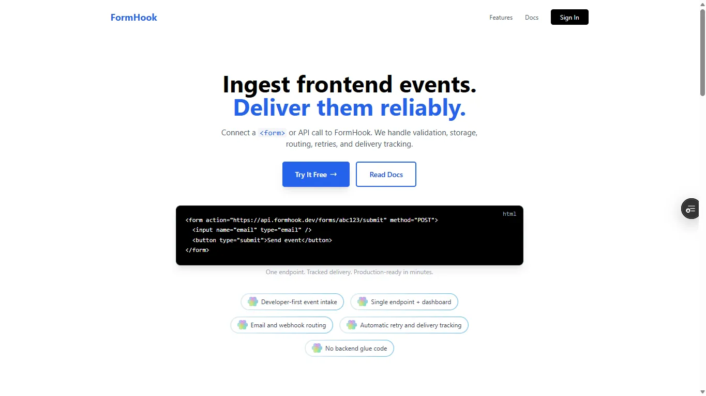
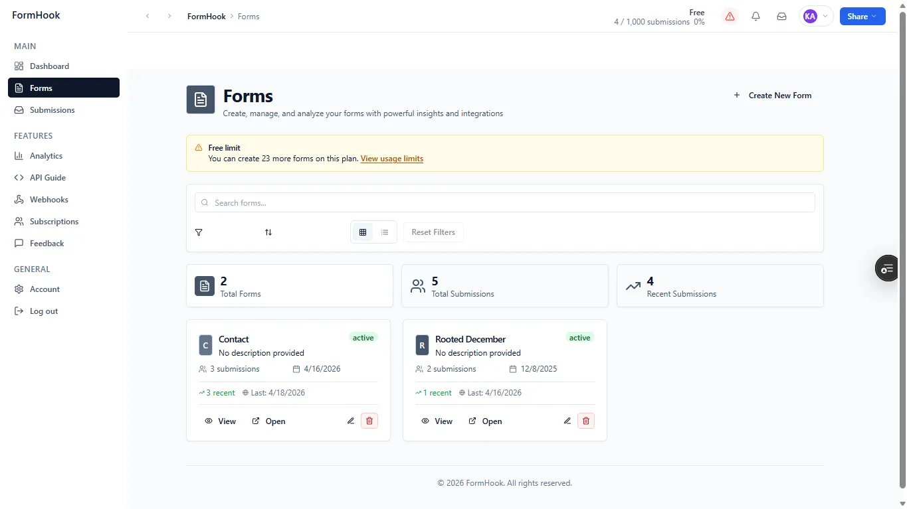
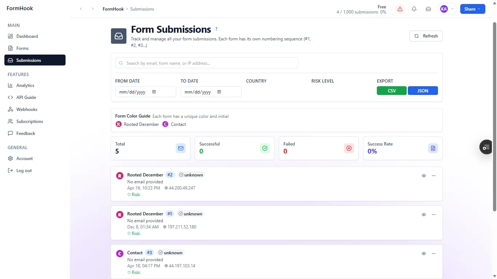
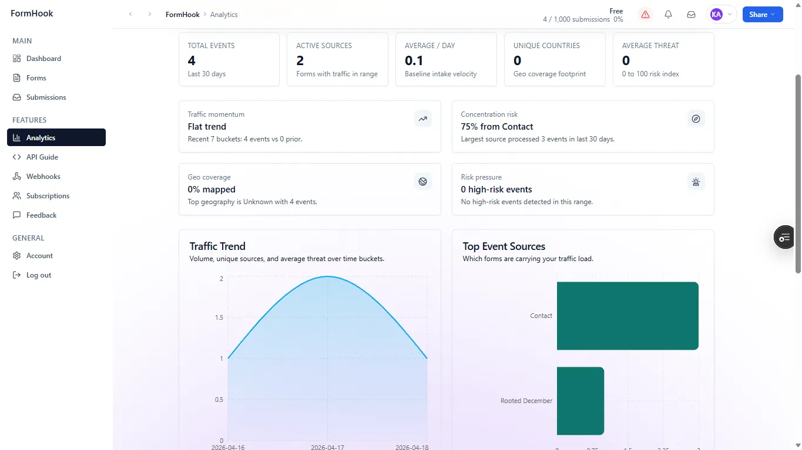

FormHook
A lightweight form backend that does the plumbing for you—public submission endpoint, a dashboard for your responses, webhook delivery and CSV export. Small enough to set up in minutes, flexible enough for a real workflow.





Context
Small teams and solo developers often need form capture, email or webhook delivery, and a response dashboard long before they want to build a custom backend. FormHook covers exactly that gap—intentionally small, quick to set up, flexible enough for real use.
What I built
A form backend with a public submission endpoint, a private dashboard for reviewing responses, webhook delivery for automation, and CSV export for offline handling. Next.js and serverless APIs kept the app deployment-friendly, while Supabase handled persistence without adding operational complexity.
Why this approach
Next.js and serverless kept deployment boring and reliable, Supabase carried persistence with zero ops, and a clean dashboard made responses easy to scan. The product is shaped around the job it does, not the stack.
Role & scope
Product thinking, frontend structure, backend integration, and the submission flow from capture to export.
Result
A lean developer utility that removes the busywork of form plumbing—set up in minutes and ready to drop straight into an existing workflow.